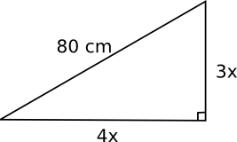
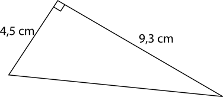
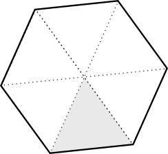

5. Pythagoras sats
Pythagoras sats handlar om sambandet mellan längderna av kateterna, de korta sidorna, och hypotenusan, den långa sidan, för en rätvinklig triangel. Sambandet, Pythagoras sats, har man använt långt före Pythagoras levde i antikens Grekland. I tex Egypten klarade man av att dela in åkermarken i rektanglar och kvadrater med hjälp av snören som var indelade i 3, 4 och 5 enheter.
Pythagoras sats handlar om sambandet mellan längderna för kateterna och längden för hypotenusan för en triangel.

\( a^2+b^2=c^2 \)
Pythagoras sats kan bevisas på flera olika sätt. På Wikipedia har du ett par stycken.
Exempel 1 Bestäm längden av hypotenusan då kateterna har längderna 2 och 4.
Lösning
\( \begin{array}{lrcl} \textrm{Pyhtagoras sats} & a^2+b^2 & = & c^2 \\ & 2^2+4^2 & = & c^2\\ & c^2 & = & 4+16 \\ & c & = & \pm\sqrt{20} \\ \end{array} \)
Där endast den positiva duger eftersom vi har en sträcka
\( c=2\sqrt{5} \) l.e.
Exempel 2 Bestäm längden av x i figuren nedan.

Lösning
\( \begin{array}{rrcl} \textrm{Pyhtagoras ger att :} & 5^2+x^2 & = & 10^2 \\ & x^2 & = & 100-25 \\ & x & = & \sqrt{75} \\ & x & = & 5\sqrt{3} \quad \textrm{l.e. (längdenheter)}\\ \end{array} \)
Exempel 3 Hur bred bör en dörröppning vara så att man får in en skiva som är 3,0 m bred då dörrens höjd är 2,1 m?
Lösning
Vi har följande situation:

\( \begin{array}{lrcll} \textrm{Pythagoras lyder som att} & a^2+b^2 & = & c^2 & \textrm{} \\ \textrm{Vi får} & 2,1^2 + b^2 & = & 3^2 & \textrm{} \\ \textrm{} & b^2 & = & 9-4,41 & \textrm{} \\ \textrm{} & b & = & \pm\sqrt{4,59} & \textrm{Sträckan kan inte vara negativ.} \\ \textrm{} & b & = & 2,14 \textrm{ m} & \\ \end{array} \)
Exempel 4 Bestäm längden och bredden för en rektangel då vi vet att förhållandet mellan sidorna är 3:4 och diagonalen är 80 cm lång.
Lösning
Vi döper sidorna till 3x och 4x och utnyttjar oss av Pythagoras sats.

\( \begin{array}{lrcll} \textrm{} & (3x)^2+(4x)^2 & = & 80^2 & \textrm{} \\ \textrm{} & 9x^2+16x^2 & = & 6400 & \textrm{} \\ \textrm{} & 25x^2 & = & 6400 & \mid /25 \textrm{} \\ \textrm{} & x^2 & = & 256 & \textrm{} \\ \textrm{} & x & = & \pm 16 & \textrm{} \\ \end{array} \)
Längden av sidorna är \( 3\cdot 16 = 48 \) cm och \( 4\cdot 16=64 \) cm.
Exempel 5 Vi bestämmer höjden och arean av en liksidig triangel med sidan \( a \).

Lösning
\( \begin{array}{rrcll} \textrm{Vi bestämmer höjden:} & a^2 & = & h^2+(\frac{a}{2})^2 & \textrm{} \\ \textrm {} & h^2 & = & a^2-\frac{a^2}{4} & =\frac{3a^2}{4} \textrm{} \\ \textrm {} & h & = & \sqrt{\frac{3a^2}{4}} & =\underline{\underline{\frac{a}{2}\sqrt{3}}} \textrm{} \\ \textrm {Arean är:} & A & = & \frac{1}{2}bh & \textrm{} \\ \textrm {} & & = & \frac{1}{2}\cdot a \cdot \frac{a}{2}\sqrt{3} & = \underline{\underline{\frac{a^2}{4}\sqrt{3}}}\textrm{} \\ \end{array} \)
Uppgifter
- Vad har vi för nytta av Pyghagoras sats?
Med hjälp Pythagoras sats kan vi bestämma längderna för sidorna i en rätvinklig triangel. Vet vi två kan vi bestämma den tredje. Har vi tre längder kan vi undersöka om triangeln är rätvinklig.
- Bestäm längden av den tredje sidan i figuren.

Längden av den tredje sidan, \( c \), får vi som
\( \begin{array}{rcll} c^2 & = & 8,0^2 + 2,5^2 \\ c^2 & = & 70,25 & \mid \sqrt{\quad}\\ c & = & \pm 8,381\\ \end{array} \)
Längden är 8,4 cm.

Längden av den tredje sidan, \( c \), får vi som
\( \begin{array}{rcll} c^2 & = & 9,3^2 + 4,5^2 \\ c^2 & = & 106,74 & \mid \sqrt{\quad}\\ c & = & \pm 10,332\\ \end{array} \)
Längden är 10,3 cm.

Längden av den andra kateten får vi som
\( \begin{array}{rcll} 11,3^2 & = & 6,2^2 + a^2 \\ a^2 & = & 11,3^2-6,2^2 \\ a^2 & = & 89,25 & \mid \sqrt{\quad}\\ a & = & \pm 9,447\\ \end{array} \)
Längden är 9,4 cm.
- Bestäm längden av hypotenusan då kateterna har längden 4 och 6.
Vi har följande \( x^2 = 4^2+6^2 \) som ger oss \( x=\sqrt{16+36} = \sqrt{52}=2\sqrt{13} \).
- Bestäm längden av den ena kateten då hypotenusan har längden 9 och den andra kateten har längden 6.
Vi får att \( 9^2=6^2+x^2 \) som ger oss att \( x=\sqrt{9^2-6^2} = \sqrt{45} = 3\sqrt{5} \).
- Rymms en skiva vars längd är 4,0 m och bredd 2,2 m genom en dörröppning som är 0,6 m bred och 2,1 m hög?
Diagonalen för dörröppningen är \( \sqrt{2,1^2 + 0,6^2} = 2,184 \) m.
Alltså rymms inte en skiva som är 2,2 m bred igenom.
- För en rektangel gäller att längden är 3 gånger längre än bredden. Diagonalen för rektangeln är 5 l.e. Bestäm exakta värden för längden och bredden för rektangeln.
Vi betecknar längden av sidorna med \( x \) och \( 3x \).
Pythagoras sats ger oss att \( (3x)^2 + x^2 = 5^2 \). Vi får ekvationen
\( \begin{array}{rcl} (3x)^2 + x^2 & = & 5^2 \\ 9x^2 + x^2 & = & 25 \\ 10x^2 & = & 25 \\ x^2 & = & \dfrac{25}{10} \\ x^2 & = & \dfrac{5}{2} \\ x & = & \pm \sqrt{\dfrac{5}{2}} \\ \end{array} \)
Vi kan inte ha en negativ längd, alltså är \( x = \sqrt{\dfrac{5}{2}} \).
Längden av sidorna är \( \sqrt{\dfrac{5}{2}} \) och \( 3\sqrt{\dfrac{5}{2}} \).
- En målare vars längd är 1,7 m skall måla högst uppe på en utevägg som är 4,5 m hög. Målaren når upp till 2,5 m. Från väggen räknat växer det blommor i en rabatt som är 1,2 m bred där han inte kan sätta sin stege. Hur lång stege behöver han minst?
Vi betecknar stegens längd med \( x \). Vi får att \( x^2=(4,5-2,5)^2+1,2^2 \) som ger \( x=2,332 \) m.
- Ett sovrum är 4,0 m långt och 3,0 m brett. En parsäng som är 2,4 m lång och 2,0 m bred är placerad så att längden för sängen är placerad längs med den kortare sidan för rummet. Kan man svänga sängen 90o utan att lyfta upp den från golvet?
Vi bestämmer sängens diagonal, \( d \): \( d^2=2,4^2+2,0^2 \). Det ger att \( d=3,124 \) m.
Nej, sängens diagonal är 3,12 m och rummet är 3,0 m brett. Vi kan inte svänga den.
- Två antenner som finns på ett avstånd om 65 m från varandra. De är 45 m och 38 m höga. Bestäm avståndet mellan antennernas toppar.
BILD
Avståndet mellan topparna betecknar vi med \( x \), vi får att \( x^2=65^2+7^2 \) som ger att \( x=65,376 \) m.
Alltså 65,4 m
- Bestäm arean för följande likbenta trianglar. Hur kan du uttrycka höjden för triangeln? Rita bild och fundera.
- vars sidor är 5,5 cm och basen har längden 4,4 cm.
Höjden, \( h \), får vi ur följande: \( 5,5^2= h^2+2,2^2 \), \( h=5,0408\ldots \).
Arean är \( A=\frac{1}{2}bh=\frac{1}{2}\cdot 4,4 \cdot 5,0408\ldots = 11,0898\ldots \).
Alltså 11,1 cm2.
- vars sidor är 3a och basen 4a.
Höjden är \( h=\sqrt{(3a)^2-(2a)^2} = \sqrt{9a^2-4a^2} = a\sqrt{5} \).
Arean är \( A=\frac{1}{2}bh=\frac{1}{2}4a\cdot a\sqrt{5} = 2a^2\sqrt{5} \) a.e.
- vars sidor är 5,5 cm och basen har längden 4,4 cm.
- Bestäm längden av den ena kateten då hypotenusan är dubbelt så lång den andra kateten.
Vi betecknar den obekanta katetens längd med \( x \). Den andra katetens längd är \( a \) och hypotenusans längd är \( 2a \).
Pythagoras ger att \( (2a)^2=a^2+x^2 \) som ger \( x=\sqrt{4a^2-a^2} = \sqrt{3a^2} =a\sqrt{3} \) l.e.
Då vi bildar diagonalen i en kvadrat får vi en rät likbent triangel. Denna typ av triangel kallar vi för Typtriangel I och den brukar vi utnyttja inom geometrin.

Bestäm förhållandet mellan triangelns hypotenusa (kvadratens diagonal) och kateterna för triangeln då kateterna har längden 1. Utnyttja detta förhållande i följande uppgifter.
Vi betecknar diagonalen med \( d \). Vi får att \( d^2=1^1+1^1 \) som ger \( d=\sqrt{2} \).
Förhållandet är \( \sqrt{2}:1 \).
- Bestäm diagonalen för en kvadrat med sidan 2,5 m.
\( 2,5\sqrt{2} \) m.
- Diagonalen för en kvadrat är 2. Hur långa är sidorna?
\( \frac{2}{\sqrt{2}}=\frac{\sqrt{2}\cdot\sqrt{2}}{\sqrt{2}}=\sqrt{2} \).
- Diagonalen för en kvadrat är \( a \). Hur långa är sidorna?
\( \frac{a}{\sqrt{2}} \).
- Hypotenusan för en rät likbent triangel är 4,5 cm. Hur långa är kateterna?
\( \frac{4,5}{\sqrt{2}} \) m.
- Bestäm diagonalen för en kvadrat med sidan 2,5 m.
- Bestäm arean och vinkelsumman för en regelbunden 6-hörning genom att dela in den i lämpliga liksidiga trianglar.

Vi betecknar sidan med längden \( a \). I en liten triangel gäller att höjden är \( h=\frac{a\sqrt{3}}{2} \).
Vinkelsumman är
Varje vinkel i en liten triangel är 60o, eftersom trianglarna är liksidiga. Totalt består sexhörningen av 12 st sådana vinklar. Vinkelsumman är \( 12 \cdot 60 = 720^{\circ} \).
Arean är
En liten triangel då arean \( A=\frac{1}{2}a\cdot\frac{a\sqrt{3}}{2} = \frac{a^2\sqrt{3}}{4} \).
Den totala arean är \( 6\cdot \frac{a^2\sqrt{3}}{4} = \frac{3a^2\sqrt{3}}{2} \).
- Hypotenusan för en rätvinklig triangel är 7,0 cm. Höjden mot hypotenusan är 3,0 cm. Bestäm längden av kateterna för triangeln. Svara med en tiondel cm noggrannhet.
pyth_uppg8(1).png
Vi bildar följande förhållande, \( \frac{3}{b}=\frac{a}{7}\Leftrightarrow a=\frac{21}{b} \).
Pythagoras ger oss \( a^2+b^2=7^2 \), alltså \( (\frac{21}{b})^2+b^2=7^2 \) som ger \( b=\pm\frac{\sqrt{7}+\sqrt{9}}{2} \) och \( b=\pm\frac{\sqrt{7}-\sqrt{9}}{2} \).
De längder som duger är 3,447 och 6,093.
Den kortare kateten är 3,4 cm och den längre är 6,1 cm.
- Bestäm längden av \( a \) i figuren nedan.

Längden av första hypotenusan är \( \sqrt{2^2+1^2} = \sqrt{5} \).
Längden av andra hypotenusan är \( \sqrt{(\sqrt{5})^2+1^2} = \sqrt{6} \).
Längden av tredje hypotenusan är \( \sqrt{(\sqrt{6})^2+1^2} = \sqrt{7} \).
\( a=\sqrt{7} \).
- Hur många steg skall vi ta för att längden skall ha värdet 3? På bilden har man tagit två steg för att komma till \( a \).
4 steg.
- Tag ett Geobräde och skapa sträckorna 1, 2, 3 och 4. Inga problem eller hur? Hur skapar du sträckan som är \( \sqrt{2} \) lång? Hur är det med \( \sqrt{5} \), \( \sqrt{10} \) och \( \sqrt{13} \). Klarar du ännu av att skapa sträckorna \( 2\sqrt{2} \) och \( 3\sqrt{2} \)?
Jobba utgående från Pythagoras. Via hypotenusan kommer du åt sträckor med rötter.
- Visa att en triangel med sidorna 3, 4 och 5 är rät.
Triangeln är rätvinklig av sig om Pyhtagoras sats uppfylls.
Vi har \( 3^2+4^2 = 9 + 16 = 25 \) och \( 5^2=25 \).
Triangeln är rätvinklig och den räta vinkeln är mellan sidorna med längderna 3 och 4.
Är följande triangel rätt ritad?

Triangeln är ritad som rätvinklig. Då skall Pyhtagoras stats gälla, alltså
\( 9,0^2+3,5^2 = 93,25 \) och \( 9,7^2 =94,09 \) är inte helt exakt samma.
Däremot gäller att \( \sqrt{93,25} =9,656603958 \approx 9,7 \), som är inom felgränserna.
Triangeln är rätt ritad, inom sina felgränser.
- Bestäm längden av \( a \) i figuren nedan.